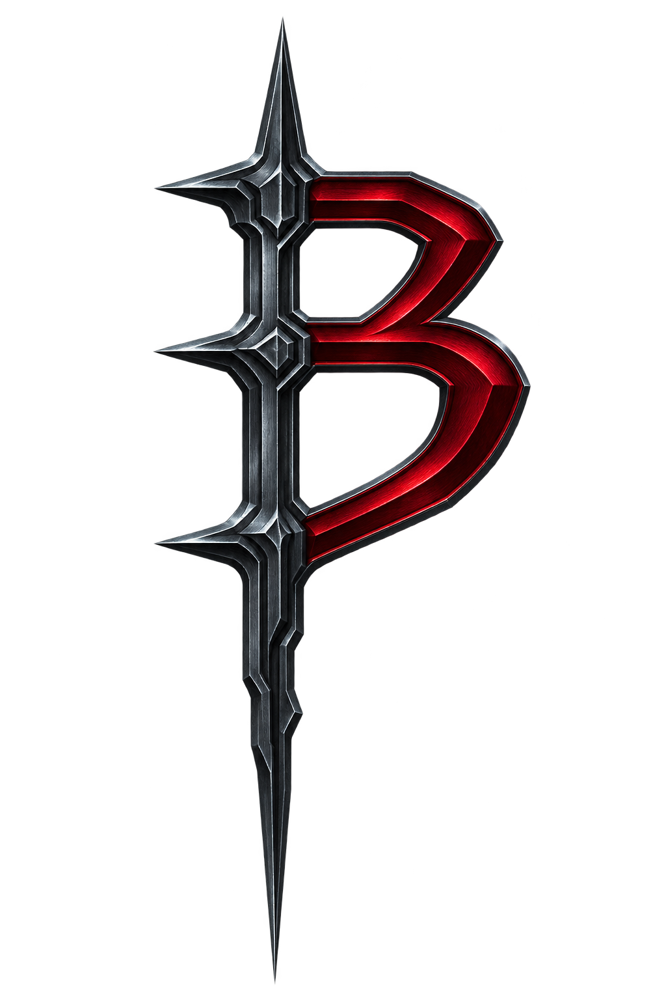

O emblema

O emblema é o B de BanneD, integrado na palavra MuBanneD. A espada e o B vermelho preservam a identidade histórica, com contornos definidos e acabamento em aço.
Baixar emblema PNGAplicação em fundo claro
Use a marca completa em banners e cabeçalhos. Reserve o B para avatar, launcher e aplicações compactas.
Baixar logomarca PNGPreserve a proporção e mantenha margem livre ao redor. Evite esticar, recolorir ou aplicar efeitos adicionais. A assinatura Editavel acompanha a marca completa; o emblema pode ser usado sozinho.